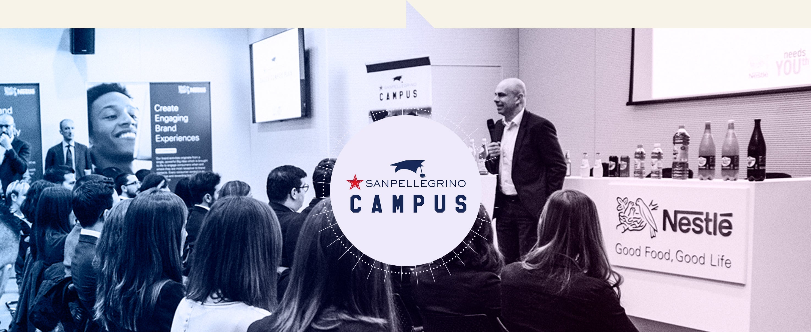

Consumo e cittadini
Il Gruppo Sanpellegrino promuove la corretta idratazione, in particolare per i bambini e le famiglie. Nel 2017 i messaggi su questo tema hanno potuto raggiungere un pubblico molto ampio, sia attraverso l’attività di una piattaforma multistakeholder di tipo istituzionale, sia mediante l’impegno di Nestlé Vera per un’idratazione non solo corretta, ma divertente, per i bambini.
L’acqua a misura di manina
Nestlé Vera ha promosso un’idratazione non solo sana, ma anche divertente, per i bambini italiani, a partire dal prodotto stesso. Nestlé Vera Kids, il formato 25 cl maneggevole e con tappo 100% sicuro e anti-goccia, si è presentata in un’edizione “Happy Nights” con tappo ed etichetta fosforescente, tesa a promuovere un consumo indipendente d’acqua anche nelle ore notturne.
Nestlé Vera Happy Nights è stata presentata nell’aprile 2017 al Museo dei Bambini di Milano.
La valorizzazione dei talenti
Per essere considerati dei fuoriclasse in cucina la passione non basta. Ciò che fa la differenza è il talento, soprattutto durante una competizione. Valorizzarlo è uno dei modi attraverso cui S.Pellegrino, ambasciatore del Made in Italy nel mondo, crea valore.
S. Pellegrino Young Chef è un’iniziativa partita nel 2015, che ha come obiettivo quello di eleggere il miglior chef under 30 tra migliaia di candidati internazionali.
Sanpellegrino Campus
Sanpellegrino Campus, ha l’obiettivo di contribuire alla crescita formativa e professionale degli studenti e dei neolaureati italiani, premiando il merito, potenziando le conoscenze e fornendo gli strumenti adatti per competere nel mondo del lavoro. Con il Sanpellegrino Made in Italy Campus nel 2017 sono state coinvolte 3 Università e circa 110 studenti.
